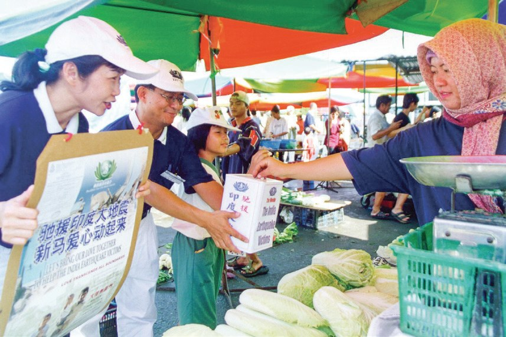
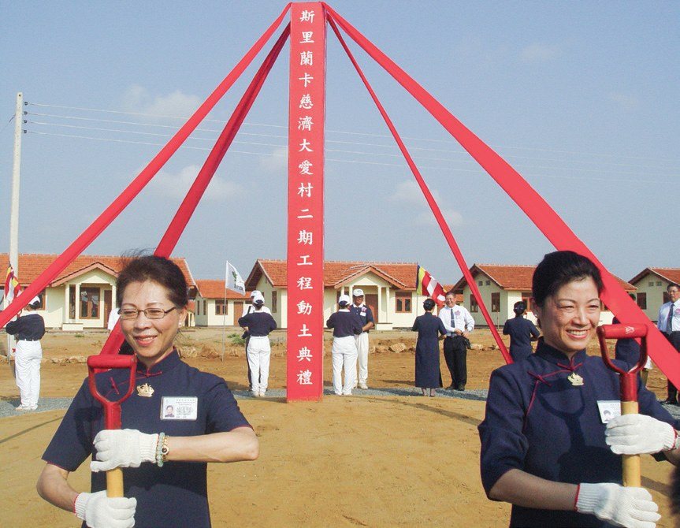
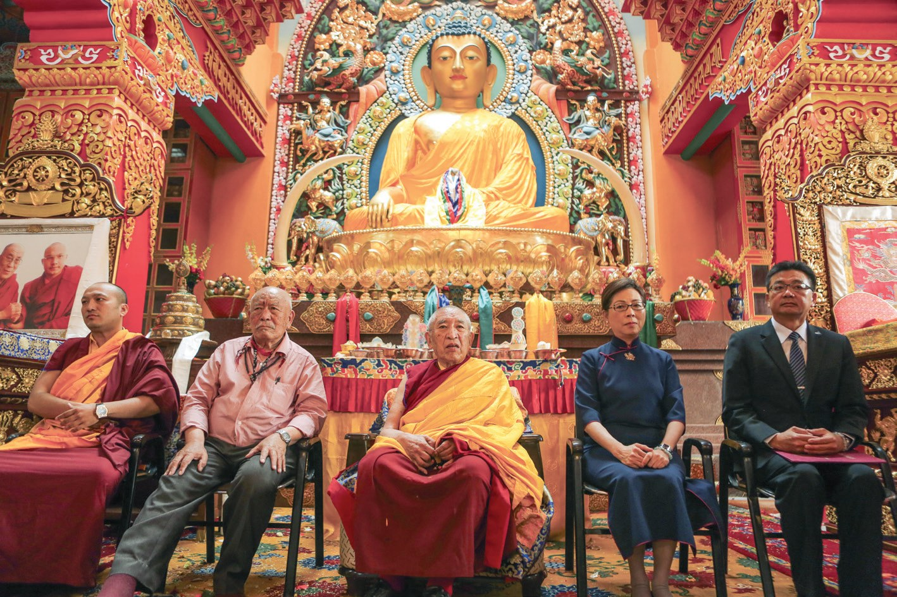
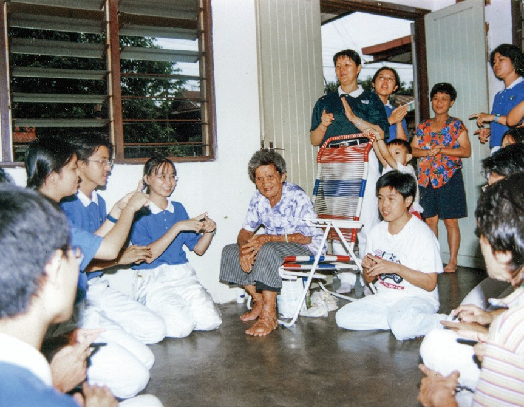
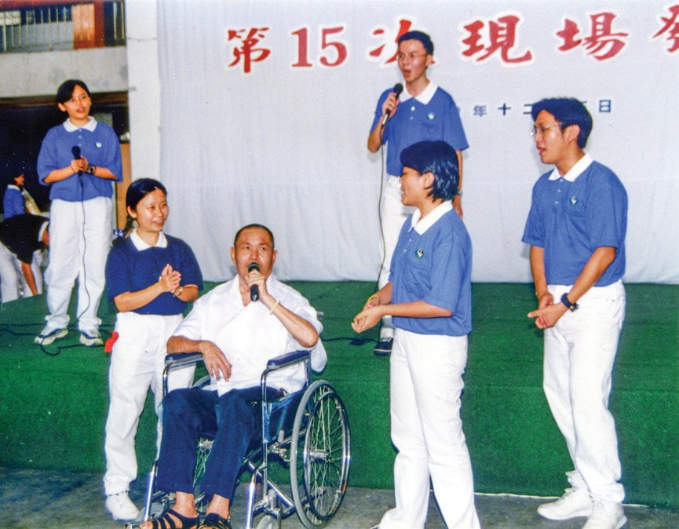
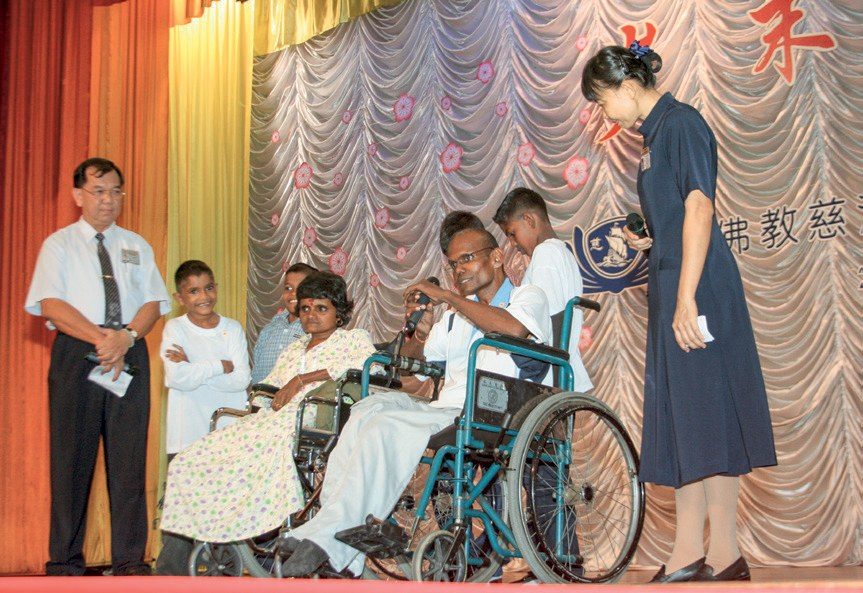
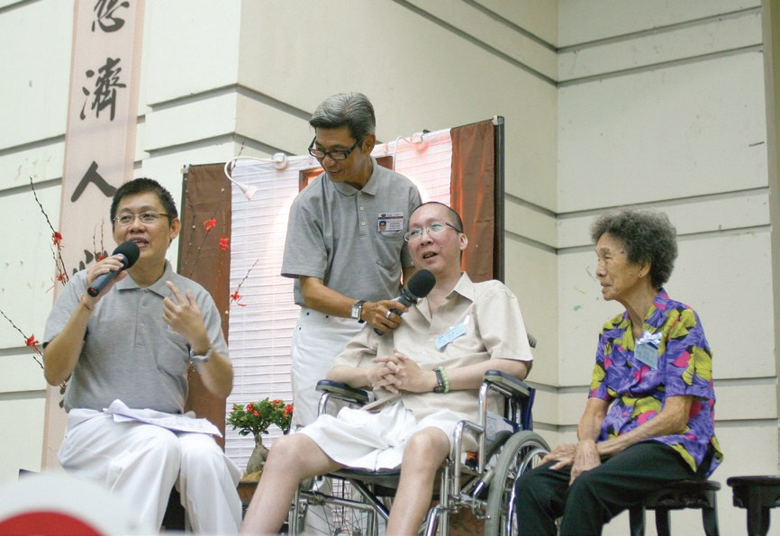

慈悲心念
愛灑大馬（下）
被幫助的人，有一天也能幫助別人嗎？

先別急著下結論，讀完再說說你的想法～
下篇先走出國門：從尼泊爾水患、印度地震、南亞海嘯，到尼泊爾的一座佛寺。
後半段是四段照顧戶的故事——看他們怎樣在病苦裡，翻轉自己的人生。
下面是原書的節錄，紅色底線是我們替你標出的轉折點。
讀之前：你覺得街頭募款，最想募到的是什麼？
大愛無國界
第一次國際賑災募款，募到了多少？閱讀引導
1993年9月尼泊爾南部遭逢水患……1993年12月26日，吉隆坡慈濟首度啟動國際賑災募款，募得二萬多令吉。
1999年9月，正當志工……為土耳其地震及科索沃內戰進行月餅義賣，投入街頭及夜市募款時，臺灣發生921大地震，募款主題也改為「馳援土耳其，情牽科索沃，送愛到臺灣」三災同時勸募。

三個地方一起募！
2001年1月26日，印度西北部發生芮氏規模7.9級強震，兩萬多人死亡……
馬來西亞志工以「馳援印度大地震，新馬愛心動起來」為號召，規劃街頭募款，並舉辦幸福人生講座、慈濟茶會等，籌辦為期一個月的大規模募款活動。
猜一猜閱讀引導
為印度大地震募款的那一個月，馬來西亞動員了多少人次的志工？

哪裡有災難，哪裡就有慈濟人
南亞海嘯、海燕風災，還有尼泊爾的一座佛寺。閱讀引導
由於馬來西亞及新加坡距離斯里蘭卡較近，馬六甲分會執行長劉濟雨帶領志工承擔災後重建，並於29日趕往斯里蘭卡，負起災後總協調的工作。

2006年4月，慈濟大愛村啟用，慈濟辦事處遷移到大愛村。2008年1月5日，在漢班托塔慈濟大愛村的「國立慈濟中學」正式啟用。

到蓋起一座村子、一間中學……
雪隆分會派遣5位志工參與勘災，於12日下午飛往馬尼拉會合當地勘災團隊，13日進入重災區勘察災情。
加德滿都的創古度母寺經歷強震後受損嚴重，主殿佛像頭部偏移，佛寺建築也需要大型整修，慈濟承諾援建後，由馬來西亞雪隆分會負責執行援建工程。

「我們非常開心，非常感謝證嚴上人，還有來自臺灣、馬來西亞所有的志工，以及很多國家的愛心，我們很感動、很感謝。」
創古度母寺住持肯波倉育法師・p.45
也來幫忙修佛寺！
慈濟不是為了募錢而募款，是要募大家的愛心。
原文・p.46- 二萬多令吉首度國際賑災募款（1993年）p.41
- 227間印度援建大愛屋p.42
- 三十多場雪隆慈濟人參與的國際災難援助（截至2023年3月）p.46
貧中的大富者
一對被人投以異樣眼光的母女，一個人人都怕的經理。閱讀引導
肉瘤婆婆黃佛嬌自13歲起，身上各處就開始長出一粒粒大小不一的肉瘤……女兒江秀容也遺傳了相同的病症。母女倆的外表讓很多人望而生畏，時常對他們投以異樣的眼光。
1999年志工帶領博大慈青開始一同訪視關懷，幫忙整理家事等，這一群年輕學生親切陪伴，志工定期的訪視，讓她們備感窩心，如同一家人。

這群學生卻像家人一樣。
江秀容心中感恩慈濟人的照顧，身體力行投入環保活動，平時收集回收物，假日就到環保站一起分類資源。
慈濟志工陪伴肉瘤婆婆和女兒二十一年，用溫暖的膚慰撫平她們心靈的傷痕，並鼓勵她們運用有限的生命去付出，成為貧中的大富者。
原文・p.48「貧中的大富者」，富在哪裡？
張財曾是運輸公司的經理，叱吒黑白兩道，意氣風發。1994年，張財因為爭看一場足球賽，被人從椅上擠跌下來，脊椎受損導致全身癱瘓。
他本來就脾氣暴躁，在癱瘓後，面對無奈的人生，更是稍不順意就罵人，連家人們都感到懼怕、厭煩。
「因為自己的壞脾氣，拒絕家人的溫情，放不下身段而未能在母親往生前克盡孝道。」
張財逐漸反省・p.49後悔的他，開始學習接受大家的愛，學習控制自己的脾氣；並敞開心懷，參與慈濟的活動，以自己的遭遇，來鼓勵大家要把握當下，及時行孝、行善。

2001年6月24日，張財本來答應要出席救援印度大地震的愛心義演晚會，卻於當日安詳往生。
最後變成鼓勵別人的人。
生命良師
坐輪椅的裁縫師，收養了五個孩子。閱讀引導
西瓦拉惹十六歲時，一場車禍讓他下半身從此癱瘓。……於是他勇敢面對逆境，到吉隆坡學習裁縫，並結識患有小兒麻痺症的太太沙米雅瑪。
他們除了負擔房屋和汽車貸款外，還撫養罹患老人癡呆症的岳父、體弱多病的岳母，並收養了五位孩子，其中四位是哥哥的孩子。
還收養了五個孩子！
2002年8月，有善心人士提報西瓦拉惹一家的情況，慈濟得以伸出援手。志工評估後，將西瓦拉惹列為慈濟照顧戶，每月補助兩百令吉。

「假使有一天我不在了，慈濟志工也會照顧我的家人，所以我不再傷心，而且也會很寬心。」
西瓦拉惹在歲末發放上坦言・p.50–51「我是激發學生向前努力的榜樣，希望他們用功讀書，以後生活較好時，也能回來幫助有難的人。」
西瓦拉惹說・p.51
反過來給學生上課？
為回饋慈濟幫助，沙米雅瑪和家人也相繼成為慈濟會員。
心面對境界時若能夠開解，自然不受境界困擾。
原文・p.52能夠付出就是幸福
全身只剩雙手能動的人，最大的心願是什麼？閱讀引導
1972年出生於檳城的梁德鴻，在15歲時罹患僵直性脊椎炎，關節漸漸無法活動。……梁德鴻病情每況愈下，全身僵硬到僅有雙手能稍微活動……
2003年4月21日，梁德鴻無意間在報紙上看到慈濟的資訊，便向吉隆坡慈濟人求助，志工立刻到梁德鴻家關懷，決定將他列為照顧戶……
猜一猜閱讀引導
志工剛開始關懷時，梁德鴻的體重大約多少？
「不只是上人、慈濟人來到我家，現在就連佛陀也來到我家！」
梁德鴻感恩地說・p.53也來到他家！
雪隆分會執行長簡慈露頒發志工服給他，圓滿他成為志工的心願……

「學著接受改變不了的事實，接受不如意的事……讓我體會到能夠付出就是幸福。」
梁德鴻說・p.54停一停：誰讓你記住了？閱讀引導
選一位你印象最深的人。沒有標準答案。
他們都曾經是被幫助的人。後來，他們又做了什麼？

一起回頭看看吧～
回望
依本章原文整理，每一條都標了原書頁碼。閱讀引導
背後原因
為什麼要上街頭

小川一場遠方的災難，跟街上的人有什麼關係？
- 哪裡有災難
哪裡有災難，哪裡就有慈濟人。p.46
- 走上街頭
印度地震一個月，8,716人次志工、上千場募心募款。p.42
- 募的是愛心
不是為了募錢而募款，是要募大家的愛心。p.46
後續發展
國際賑災一路走來

小禾從尼泊爾到尼泊爾，走了多少年？
- 1993
尼泊爾水患，首度國際賑災募款。p.41
- 1999
土耳其、科索沃、臺灣，三災同時勸募。p.41
- 2001
印度大地震，新馬愛心動起來。p.42
- 2004
南亞海嘯，劉濟雨趕往斯里蘭卡總協調。p.43
- 2006
斯里蘭卡慈濟大愛村啟用。p.44
- 2013
菲律賓海燕風災，雪隆志工參與勘災。p.44
- 2018
創古度母寺修繕完工，移交寺方。p.45
翻轉人生
四位照顧戶以前和後來
小川他們各自翻轉了什麼？
- 黃佛嬌母女：被投以異樣的眼光和慈青如同一家人，女兒投入環保p.47–48
- 張財：稍不順意就罵人學習控制脾氣，鼓勵大家及時行孝p.48–49
- 西瓦拉惹：一度想結束生命成為激發學生的榜樣p.49–51
- 梁德鴻：體重不到三十公斤穿上志工服，圓滿心願p.53
以上只整理本章寫到的事；書裡沒寫到的，我們不替它下結論。
回頭看讀前的選擇閱讀引導
上人說「慈濟不是為了募錢而募款，是要募大家的愛心」（p.46）；這幾位照顧戶後來也投入環保、上臺分享、穿上志工服（p.48–53）。讀完之後，你的答案有沒有變？
為什麼說「能夠付出就是幸福」？
只有你自己看得到喔！
準備好了就一起出發～